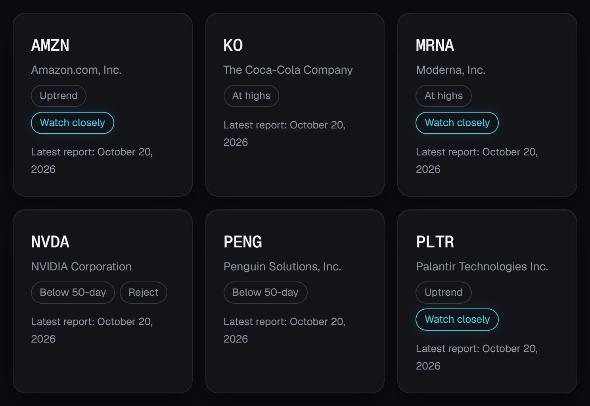
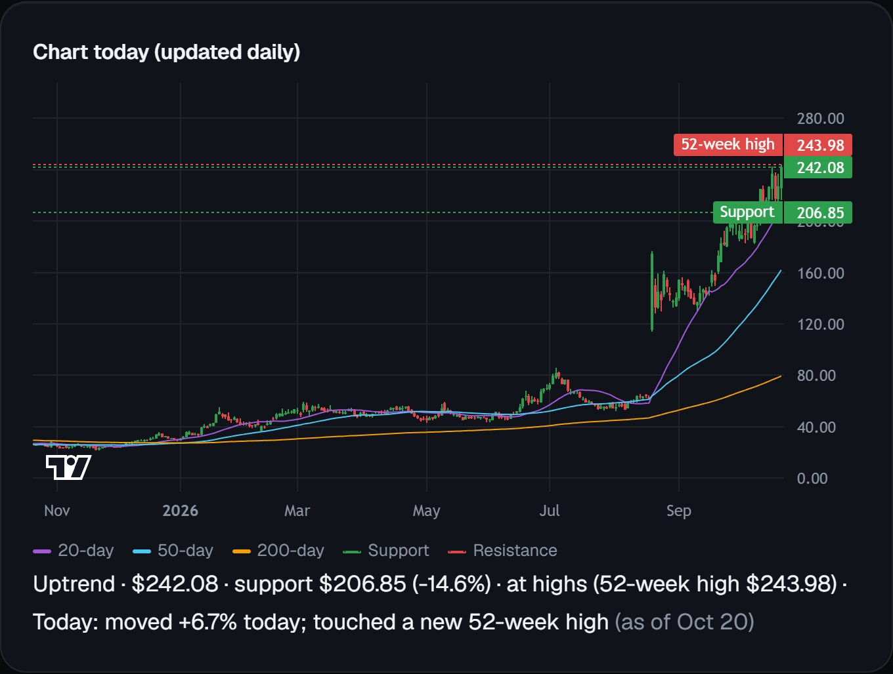
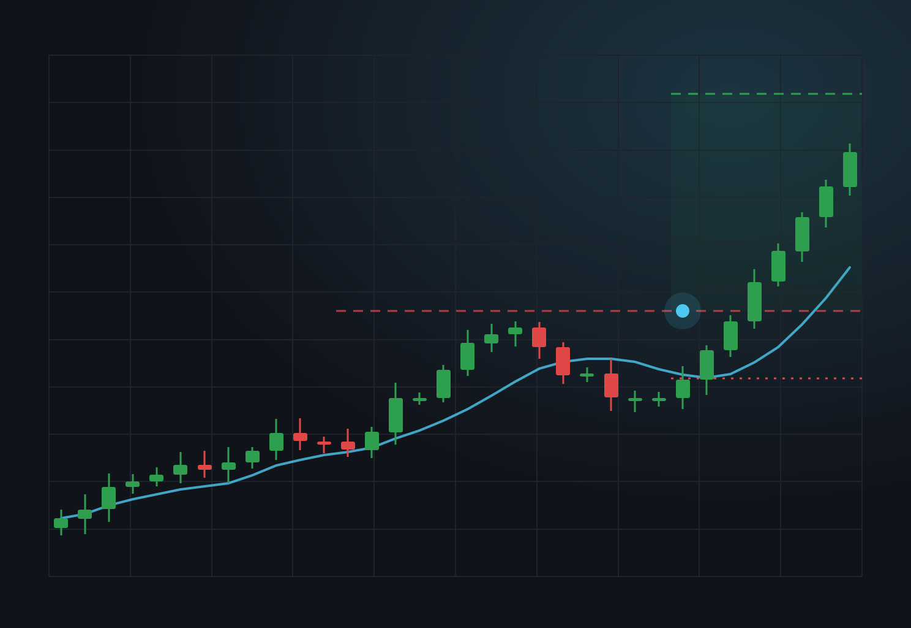

Stock Debate
An AI research tool where Grok researches a stock, Claude and ChatGPT argue bull vs bear, and Grok judges the evidence.
I'm Guy Biran, a senior at Homestead High School in California. I moved to the Bay Area from Israel about three and a half years ago. I've always been passionate about creating things. For the past two years, I've been trading stocks and using AI to build tools that help me research and find stocks, while also helping my friends invest.

The drop looks like a pullback [a small move back after a rise], and price still sits just above a tested floor.
The short chart is weak, and a break of nearby support is a small move away.
Fresh demand headlines still show buyers wanting Nvidia chips and new products.
Rate news and peer reports can hit the group again before Nvidia reports.

An AI research tool where Grok researches a stock, Claude and ChatGPT argue bull vs bear, and Grok judges the evidence.

It scans stocks, analyzes them using technical analysis, sends alerts, and tracks each stock until it's time to sell.